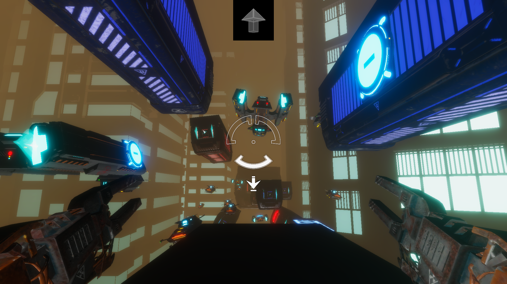
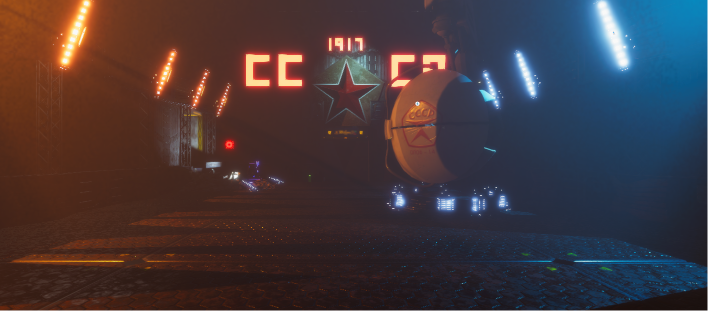
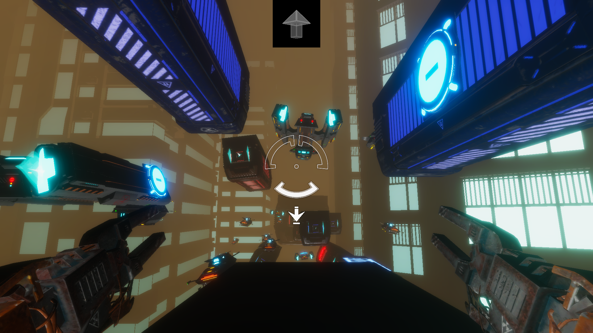
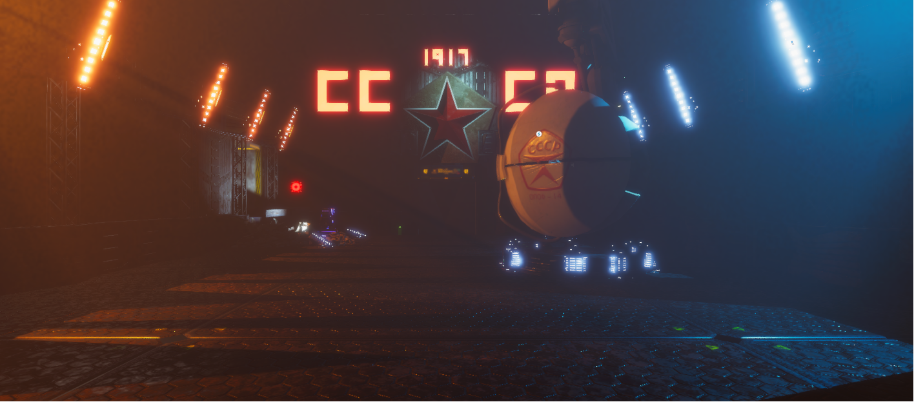

Factory Reset
A single-player first-person puzzle game about a magnetic robot on a quest to find their way home through a Soviet-inspired cyberpunk world. Use your magnetic hands and feet to push and pull your way through three different levels!
 



Team
- Elizabeth Kirschner (myself) - Accessible Design Lead
- Christian Orion Adler - Artist
- Raymond Dolan - Gameplay Programmer & Audio Lead
- Joseph Henry Stadolnik IV - Gameplay Programmer & Designer
About
Factory Reset was created as my Major Qualifying Project at Worcester Polytechnic Institute. The game had a strong emphasis on accessibility, with many features and design decisions intended to make the game playable by a larger audience.
The menu options provided included:
- Remappable controls (with controller support)
- Adjustable look sensitivity
- Various resolution and display settings
- Customizable volume levels
- The option to change between hold and toggle control modes
- The option to hide the re-orientation animation (to reduce motion sickness)
Accessibility was also a factor in the core design of the game: we avoided requiring multiple simultaneous actions or any sort of time pressure to make the game more accessible for people with cognitive or motor disabilities, and we chose red and blue for the polarity colors since they are distinguishable with all forms of dichromatic vision.
My Role
As the accessible design lead I was responsible for the research, design, implementation, and evaluation of all accessible features in Factory Reset. I designed, developed, and ran the three rounds of usability studies conducted to test the both the game and its accessibility over the course of development.
Other
Factory Reset won the 2021 Provost's MQP Award from Worcester Polytechnic Institute's IMGD Department for being an outstanding Major Qualifying Project.